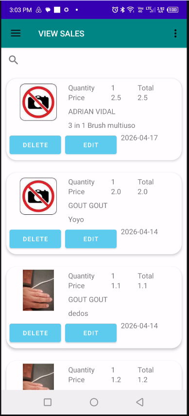
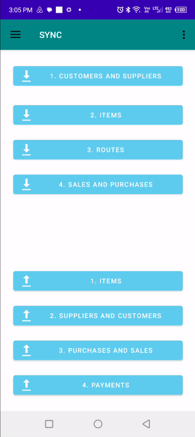
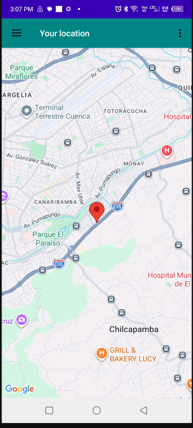

Progettata per la Mobilità e le Operazioni sul Campo
L'applicazione mobile porta le principali funzionalità aziendali direttamente sugli smartphone Android. Gli utenti possono creare clienti, gestire fornitori, registrare vendite e acquisti, monitorare le attività aziendali, visualizzare informazioni geografiche e sincronizzare i dati con la piattaforma centrale.
Che si lavori in ufficio, si visitino clienti, si gestiscano operazioni sul campo o si supportino team remoti, l'applicazione mobile mantiene le informazioni aziendali accessibili e aggiornate.
Accesso Utente Sicuro
Schermata di autenticazione che fornisce accesso sicuro alle informazioni aziendali, ai permessi degli utenti e ai dati aziendali sincronizzati.

Dashboard dell'Applicazione Mobile
Schermata centrale di navigazione che offre accesso rapido a clienti, fornitori, inventario, acquisti, vendite, mappe, sincronizzazione e analisi.

Creazione di Clienti e Fornitori
Crea anagrafiche clienti e fornitori direttamente dal dispositivo mobile, consentendo al personale sul campo di registrare immediatamente nuovi partner commerciali.

Rubrica Clienti e Fornitori
Consulta e gestisci clienti e fornitori esistenti, esamina le informazioni e accedi ai dati commerciali da qualsiasi luogo.

Creazione di Prodotti
Registra nuovi prodotti e articoli di inventario direttamente dal campo, eliminando ritardi e migliorando l'efficienza operativa.

Catalogo degli Articoli di Inventario
Visualizza prodotti disponibili, informazioni di inventario e dettagli degli articoli tramite un'interfaccia mobile intuitiva.

Registrazione delle Vendite
Registra le vendite ai clienti in tempo reale, consentendo ai rappresentanti commerciali di acquisire immediatamente le transazioni durante le visite ai clienti.

Cronologia delle Vendite
Consulta le transazioni di vendita completate, monitora le prestazioni e verifica l'attività commerciale dai dispositivi mobili.

Registrazione degli Acquisti
Crea transazioni di acquisto e ordini ai fornitori direttamente dal campo, garantendo la continuità delle operazioni aziendali senza ritardi.

Cronologia degli Acquisti
Accedi alle informazioni storiche sugli acquisti, analizza l'attività dei fornitori e valuta le operazioni di approvvigionamento.

Sincronizzazione dei Dati
Sincronizza clienti, fornitori, prodotti, vendite, acquisti e dati operativi con la piattaforma desktop.

Grafici e Analisi Aziendale
Genera report visivi, indicatori di performance e statistiche aziendali direttamente dall'applicazione mobile.

Mappe Geografiche Interattive
Visualizza clienti, fornitori e rappresentanti commerciali su mappe interattive, supportando la pianificazione dei percorsi, la gestione dei territori e le operazioni sul campo.
